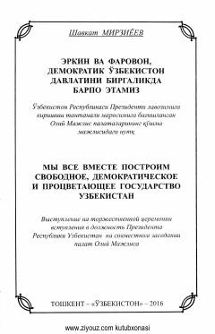

EVO‘zbekistonni erkin va farovon davlat sifatida rivojlantirishga bag‘ishlangan muhim siyosiy nutq.
Mazkur kitob O‘zbekiston Respublikasi Prezidenti Shavkat Mirziyoyevning Oliy Majlis palatalarining qo‘shma majlisidagi tantanali nutqini o‘z ichiga oladi. Unda mamlakatimizni erkin, farovon va demokratik asosda rivojlantirishning ustuvor yo‘nalishlari belgilab berilgan. Shuningdek, xalqimizning fidokona mehnati va kelajakka bo‘lgan yuksak ishonchi e'tirof etilgan.